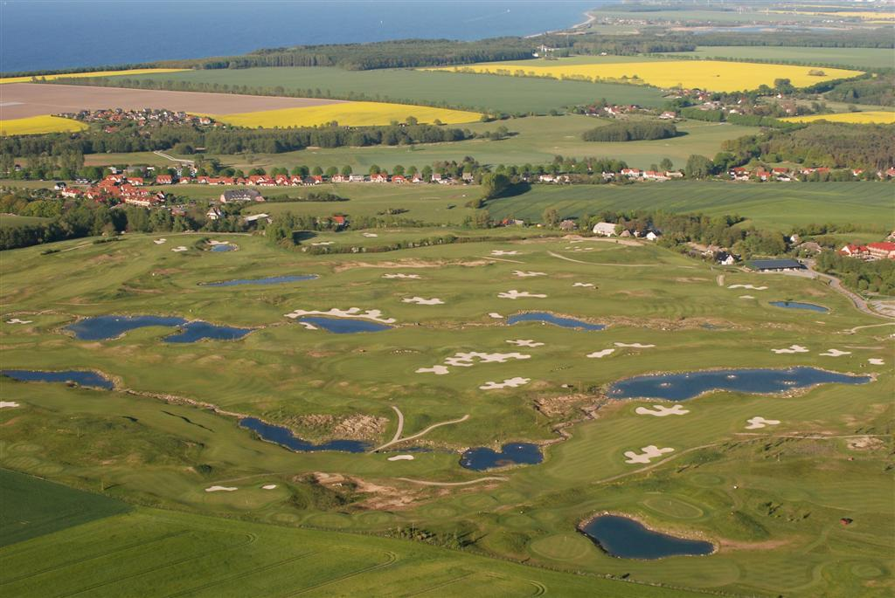
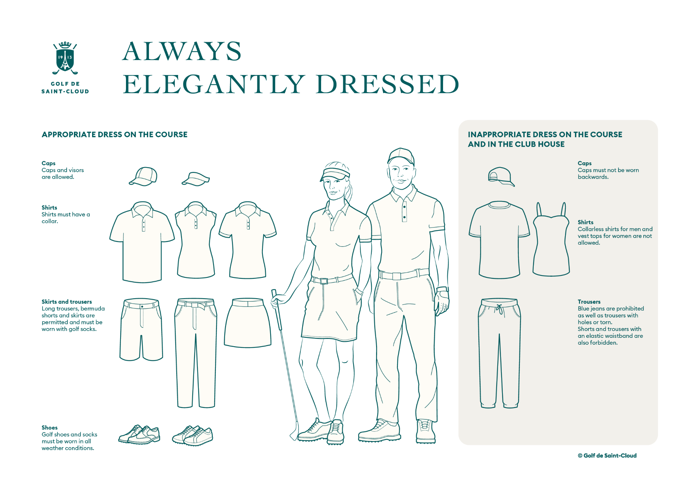

General Information about Golf
Golf, a cross-country game in which a player strikes a small ball with various clubs from a series of starting points (teeing grounds) into a series of holes on a course. The player who holes his ball in the fewest strokes wins. The origins of the game are difficult to ascertain, although evidence now suggests that early forms of golf were played in the Netherlands first and then in Scotland. From a somewhat obscure antiquity, the game attained worldwide popularity, especially in the 20th century. Nothing is known about the early game’s favourite venues on the European continent, but in Scotland golf was first played on seaside links with their crisp turf and natural hazards. Only later in the game’s evolution did play on downs, moorland, and parkland courses begin. Golfers participate at every level, from a recreational game to popular televised professional tournaments. Despite its attractions, golf is not a game for everyone; it requires a high degree of skill that is honed only with great patience and dedication.
Golf's first major, and the world's oldest golf tournament, is The Open Championship, also known as the British Open, which was first played in 1860 at the Prestwick Golf Club in Ayrshire, Scotland. This is one of the four major championships in men's professional golf, the other three being played in the United States: The Masters, the U.S. Open, and the PGA Championship.
Golf Course
A golf course consists of either 9 or 18 holes, each with a teeing ground or "tee box" that is set off by two markers showing the bounds of the legal tee area, fairway, rough and other hazards, and the putting green surrounded by the fringe with the pin (normally a flagstick) and cup. The levels of grass are varied to increase difficulty, or to allow for putting in the case of the green. While many holes are designed with a direct line-of-sight from the teeing area to the green, some holes may bend either to the left or to the right. This is commonly called a "dogleg", in reference to a dog's knee. The hole is called a "dogleg left" if the hole angles leftwards and "dogleg right" if it bends right. Sometimes, a hole's direction may bend twice; this is called a "double dogleg".
A regular golf course consists of 18 holes, but nine-hole courses are common and can be played twice through for a full round of 18 holes. Early Scottish golf courses were primarily laid out on links land, soil-covered sand dunes directly inland from beaches. The word "links" derives from the Scots language and the Old English word hlinc ("rising ground, ridge"): traditionally these are coastal sand dunes but sometimes open parkland.This gave rise to the term "golf links", particularly applied to seaside courses and those built on naturally sandy soil inland.[20] The first 18-hole golf course in the United States was on a sheep farm in Downers Grove, Illinois, in 1892. The course is still there today.
Golf Dress Code
Golf shirts, also known as a polo, a golf shirt is a short-sleeve collared shirt with a placket neckline and a few buttons at the top. Women's golf shirts are also available in a sleeveless tank-top style, which is ideal for hot summer days. Golf shirts are typically made from a comfortable, moisture-wicking fabric such as cotton or polyester, which helps keep you cool and won't interfere with your swing. Though golf shirts do come in a variety of colors, the general rule of thumb is to choose a neutral hue that's not too distracting on the golf course.
Golf pants and shorts come in a variety of styles as well. No matter what you choose, they should be comfortable and not restrict movement. This allows you to assume proper posture so you're at the top of your game. Women can also wear pants or shorts, of course, but an athletic skirt or dress are also options. Shorts should hit just above the kneecap, and skirts and dresses shouldn't sit more than two inches above the kneecap. Avoid streetwear bottoms—including denim and basketball shorts—and stick to a looser fit versus yoga pants or bike shorts. As for color, khaki, black or white suits the proper golf attire aesthetic.